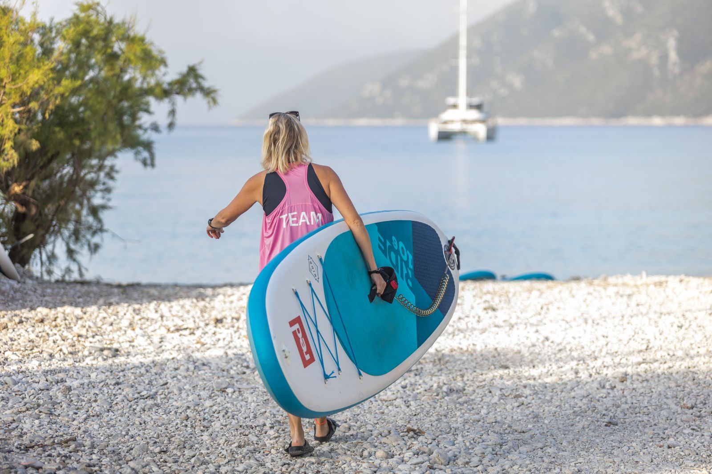

Ingår för alla gäster
SUP och mountainbike
Tidigt på morgonen är viken ofta spegelblank. Då är det perfekt att ta en SUP direkt från stranden och paddla längs kusten innan vinden kommer.
Mountainbikes finns att låna hela dagen. Det finns lugna stigar genom den gröna dalen bakom byn, och rejäla backar upp i bergen för den som vill.
🏄 SUP🚵 Mountainbike🕗 08–18


Foto: Club Vass